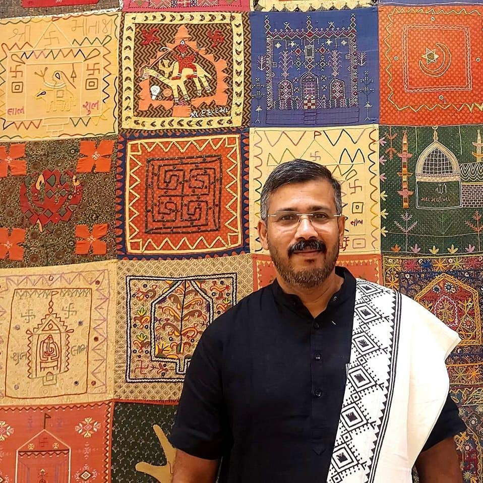

ಕನ್ನಡ ರಂಗಭೂಮಿಗೆ ಮಾತು, ಮೌನ ಮತ್ತು ಬೆಳಕನ್ನು ನೀಡಿದ ಸೃಜನಶೀಲ ಕಲಾವಿದ.

ಡಾ. ಬೇಲೂರು ರಘುನಂದನ್ ಅವರು ಕವಿ ಮತ್ತು ನಾಟಕಕಾರರು. ಕಾವ್ಯ, ಮಕ್ಕಳ ಸಾಹಿತ್ಯ, ನಾಟಕ, ಕಥೆ, ಅಂಕಣ ಬರಹ, ಪ್ರವಾಸ ಸಾಹಿತ್ಯ ಮತ್ತು ಸಂಶೋಧನಾ ಬರಹಗಳನ್ನು ಬರೆಯುತ್ತಾರೆ. ಅವರ ನಾಟಕಗಳು ತಮಿಳು, ಕೊಂಕಣಿ, ಇಂಗ್ಲಿಷ್ ಮತ್ತು ಹಿಂದಿ ಭಾಷೆಗಳಿಗೆ ಅನುವಾದಗೊಂಡಿವೆ.
ಹಾಸನ ಜಿಲ್ಲೆಯ ಬೇಲೂರಿನಲ್ಲಿ ಜನಿಸಿದ ಅವರು, ‘ಶ್ವೇತಪ್ರಿಯ ಗುರುವೆ’ ಅಂಕಿತದಲ್ಲಿ ನಾನೂರಕ್ಕೂ ಹೆಚ್ಚು ಕಟ್ಟುಪದಗಳನ್ನು ರಚಿಸಿದ್ದಾರೆ. ಅವರ ಬಾಲ್ಯದ ಅನುಭವಗಳು ‘ಚಿಟ್ಟೆ’ ನಾಟಕದಲ್ಲಿ ಪ್ರಕಟಗೊಂಡಿವೆ.
ಬೇಲೂರಿನ ವೈ.ಡಿ.ಡಿ ಪ್ರಥಮ ದರ್ಜೆ ಕಾಲೇಜಿನಲ್ಲಿ ಪದವಿ ಪೂರೈಸಿದ ಅವರು, ರಾಷ್ಟ್ರಕವಿ ಕೆ.ವಿ. ಪುಟ್ಟಪ್ಪ ಮತ್ತು ಡಾ. ಚದುರಂಗ ಸೇರಿದಂತೆ ನಾಲ್ಕು ಚಿನ್ನದ ಪದಕಗಳೊಂದಿಗೆ ಮೈಸೂರು ವಿಶ್ವವಿದ್ಯಾನಿಲಯದಿಂದ ಕನ್ನಡ ಸ್ನಾತಕೋತ್ತರ ಪದವಿ ಪಡೆದರು. ಹಂಪಿಯ ಕನ್ನಡ ವಿಶ್ವವಿದ್ಯಾಲಯದಿಂದ ದೇಜಗೌ ಅವರ ‘ಅನಲಾ’ ಮತ್ತು ‘ದುಷ್ಟಬುದ್ಧಿ’ ನಾಟಕಗಳ ಅಧ್ಯಯನಕ್ಕೆ ಎಂ.ಫಿಲ್, ಹಾಗೂ ‘ಕನ್ನಡ ರಂಗಭೂಮಿ ಮತ್ತು ಸಿನೆಮಾ: ವ್ಯಕ್ತಿ ನೆಲೆಯ ತಾತ್ವಿಕ ಚಿಂತನೆಗಳು’ ವಿಷಯದಲ್ಲಿ ಪಿಎಚ್.ಡಿ ಪಡೆದಿದ್ದಾರೆ. ಅವರ ವಿದ್ಯಾರ್ಹತೆಯನ್ನು ಎಂ.ಎ., ಎಂ.ಫಿಲ್, ಪಿಎಚ್.ಡಿ ಮತ್ತು ಡಿ.ಲಿಟ್ ಎಂದು ದಾಖಲಿಸಲಾಗಿದೆ.
ಬೇಲೂರಿನ ಶಾಂತಲ ಪದವಿ, ಹೊಯ್ಸಳ ಮತ್ತು ಸರ್ವೋದಯ ಕಾಲೇಜುಗಳಲ್ಲಿ ಅಧ್ಯಾಪನ ನಡೆಸಿ, 2009ರಲ್ಲಿ ಕರ್ನಾಟಕ ಸರ್ಕಾರದ ಕಾಲೇಜು ಶಿಕ್ಷಣ ಇಲಾಖೆಗೆ ಸೇರಿದರು. ಪ್ರಸ್ತುತ ಬೆಂಗಳೂರಿನ ವಿಜಯನಗರದ ಸರ್ಕಾರಿ ಪ್ರಥಮ ದರ್ಜೆ ಕಾಲೇಜಿನಲ್ಲಿ ಪ್ರಾಧ್ಯಾಪಕರಾಗಿ ಹಾಗೂ ಕನ್ನಡ ಸ್ನಾತಕೋತ್ತರ ಮತ್ತು ಸಂಶೋಧನಾ ಕೇಂದ್ರದ ಸಂಯೋಜಕರಾಗಿ ಕಾರ್ಯನಿರ್ವಹಿಸುತ್ತಿದ್ದಾರೆ. ಒಂದು ವರ್ಷ ಉದಯ ಟಿ.ವಿ.ಯಲ್ಲಿ ಕಾರ್ಯಕ್ರಮ ನಿರ್ವಾಹಕರಾಗಿ ಹಾಗೂ ಬೆಂಗಳೂರಿನ ಕೆನರಾ ಬ್ಯಾಂಕ್ ಲೇಔಟ್ನ ಅರಬಿಂದೊ ಶಾಲೆಯಲ್ಲಿ ಪ್ರಾಂಶುಪಾಲರಾಗಿಯೂ ಸೇವೆ ಸಲ್ಲಿಸಿದ್ದಾರೆ.
ರಮೇಶ್ ಮತ್ತು ಸುಬ್ಬಲಕ್ಷ್ಮಿ ದಂಪತಿಯ ಹಿರಿಯ ಮಗನಾದ ಅವರಿಗೆ ಒಬ್ಬ ಸೋದರಿ ಹಾಗೂ ಒಬ್ಬ ಸೋದರ ಇದ್ದಾರೆ. ಪತ್ನಿ ಲಕ್ಷ್ಮಿ ರಘುನಂದನ್ ಅವರೊಂದಿಗೆ ಗೋಕುಲ ಸಹೃದಯ ಮತ್ತು ಉದಯರವಿ ಎಂಬ ಇಬ್ಬರು ಮಕ್ಕಳ ಕುಟುಂಬ ಅವರದು.
ಪೋಸ್ಟರ್ ಮೇಲೆ ಒತ್ತಿದರೆ ನಾಟಕದ ವಿವರಗಳು ತೆರೆದುಕೊಳ್ಳುತ್ತವೆ.
ಮುಖಪುಟ ಮೇಲೆ ಒತ್ತಿದರೆ ಪುಸ್ತಕದ ವಿವರಗಳು ತೆರೆದುಕೊಳ್ಳುತ್ತವೆ.
ಹಾಡು ಆರಿಸಿ, ಕೇಳಿ, ಸಾಹಿತ್ಯವನ್ನು ಓದಿ.
೨೦೦೯ರಲ್ಲಿ ಸಾಹಿತ್ಯ, ರಂಗಭೂಮಿ ಮತ್ತು ಸಿನೆಮಾ ಕ್ಷೇತ್ರಗಳಲ್ಲಿ ಕೆಲಸ ಮಾಡಲು ಅವರು ಕಾಜಾಣ ಬಳಗವನ್ನು ಆರಂಭಿಸಿದರು. ಕಾವ್ಯ ಮತ್ತು ರಂಗ ಕಮ್ಮಟ, ಪುಸ್ತಕ ಪ್ರಕಟಣೆ, ಚಿಣ್ಣರ ಕಾಜಾಣ, ಸಸ್ಯ ಕಾಜಾಣ, ಸಿನಿ ಕಾಜಾಣ ಮುಂತಾದ ಕಾರ್ಯಕ್ರಮಗಳನ್ನು ಇದು ನಡೆಸುತ್ತದೆ. ಕಾಜಾಣ ಪ್ರಕಾಶನವು ಕವಿತೆ, ಆತ್ಮಕತೆ, ವಿಮರ್ಶೆ, ಸಂಶೋಧನೆ, ಸಂಪಾದನೆ ಮುಂತಾದ ಪ್ರಕಾರಗಳಲ್ಲಿ ಪುಸ್ತಕಗಳನ್ನು ಹೊರತಂದಿದೆ.
ಸಾಮಾಜಿಕ ಜಾಲತಾಣಗಳಲ್ಲಿ ಅವರನ್ನು ಅನುಸರಿಸಿ.